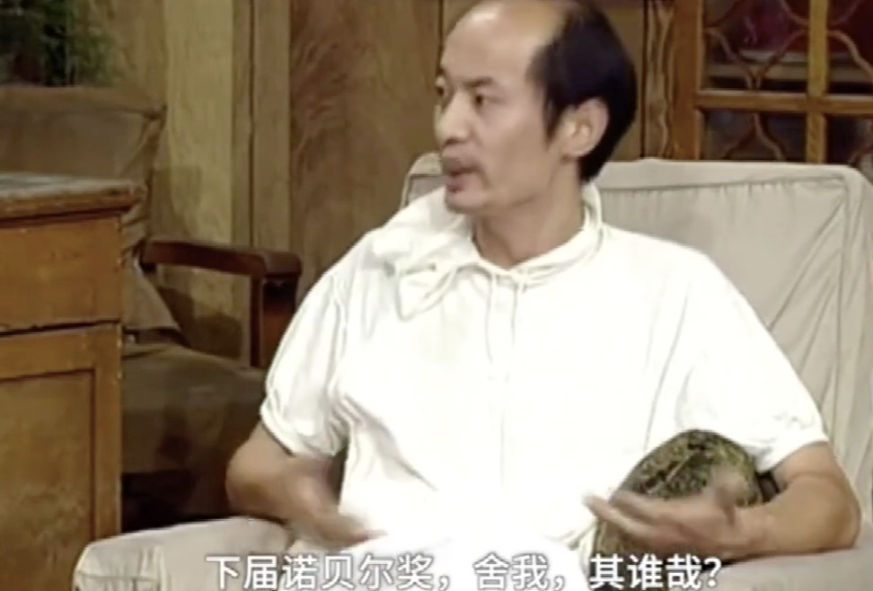

罗志祥1979年7月30日出生在一个康乐队的家庭的里，有一半的台湾原住民（母亲是阿美族人）血统，是独生子。家庭生活靠爸爸的简单乐器和妈妈的歌喉为生。
2岁时，每天在康乐队看着叔叔打鼓。而自己在家里倒放了两个饼干桶作为他的鼓，私自跟随妈妈林香兰练歌曲的节奏敲打饼干罐。后被父母发现有音乐天赋，其后就在康乐队中表演打鼓。
5岁时就成了康乐队的台柱，随着父母在台北和基隆等地表演。在6岁时和爸爸一起参加了中国电视公司《六灯奖》节目的亲子歌唱大赛，荣获亚军。
罗志祥在小学和初中时很肥胖，加上皮肤也很黑，所以被取笑叫“小猪”，并一直沿用这昵称。因不想再被取笑，他于国三暑假以游泳及打篮球的方式减肥，并成功减肥瘦下来。罗志祥考进华冈艺校，但因为经济问题而回基隆就学。后毕业于基隆市培德工家。
罗志祥因青蛙肢而未服兵役，有轻微的心脏二尖瓣膜闭锁不全症，不能吃有咖啡因的食品。 罗志祥于15岁开始跳街舞，导致膝软骨磨损严重，20岁就有“软脚”症兆，医生诊断髌骨软化症，建议开刀做人工软骨，罗志祥怕不能再跳拒绝开刀。